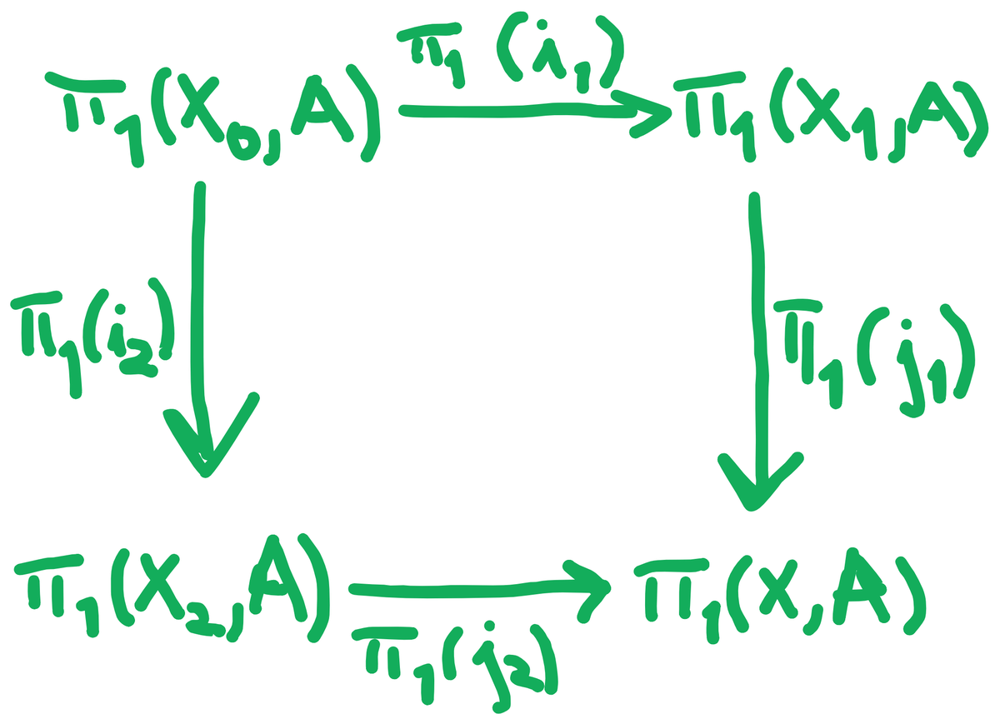

The Seifert–van Kampen theorem
How to understand the loops in a space by cutting it into simpler pieces.
First: the fundamental group π₁
Pick a base point in a space X and look at all the loops that start and end there. Two loops count as the same if one can be continuously deformed into the other. Loops can be chained one after the other, which turns them into a group: the fundamental group π₁(X).
In a disc, every loop shrinks to a point, so π₁ is trivial. On a circle, a loop is determined by how many times it winds around (…, −1, 0, 1, 2, …), so π₁(circle) = ℤ. π₁ detects holes that a loop can get caught on.
The theorem
Cut X into two open pieces X₁ and X₂ that overlap in X₀ = X₁ ∩ X₂. All three must be path-connected, and the base point (A in the drawing) has to lie in the overlap. Then:
π₁(X) ≅ π₁(X₁) *π₁(X₀) π₁(X₂)
In words: take the loops of X₁ and of X₂ together, and identify each loop of the overlap with itself, since it appears in both pieces. The square in the drawing says exactly this. The maps π₁(i₁), π₁(i₂) send loops of the overlap into each piece, π₁(j₁), π₁(j₂) send them into X, and π₁(X) is the most "free" group that makes the square commute (a pushout).
Why it works
Any loop in X can be chopped into small pieces that each lie inside X₁ or inside X₂. So the loops of X are built from loops of the two pieces. The only ambiguity is a loop living in the overlap, which you could count as belonging to either piece, and the theorem glues those two copies together.
Two examples
- Figure eight (two circles joined at a point): each thickened circle has π₁ = ℤ and the overlap is a small blob with trivial π₁, so nothing gets glued. π₁ is the free group on two letters a and b. Its elements are words like aba⁻¹b: go around the first circle, then the second, then the first backwards…
- Sphere: cover it with two slightly enlarged hemispheres. Each is a disc (trivial π₁) and the overlap is a band around the equator, so π₁(sphere) is trivial. Every loop on a sphere can slide off and shrink to a point.